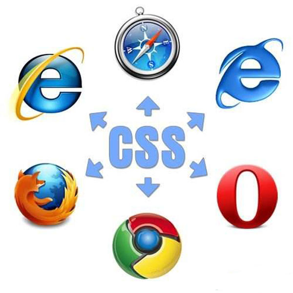

CSS样式重置
很多浏览器是以自己的方式去理解CSS规范，导致有的浏览器对CSS的解释与我们设计的初衷相冲突，使得网页样式偏离设计。因此前端工程师会在编写样式前进行CSS Reset，即CSS样式重置.
很 多HTML标签在浏览器里有默认的样式，例如 p 标签有上下边距，strong标签有字体加粗样式，em标签有字体倾斜样式。不同浏览器的默认样式之间也会有差别，例如ul默认带有缩进的样式，在IE下，它的缩进是通过margin实现的，而Firefox下，它的缩进是由padding实现的。在设计页面的时候，浏览器的默认样式往往会给我们带来麻烦，影响开发效率。所以解决方法就是一开始就将浏览器的默认样式全部去掉，更准确的说就是重新定义标签样式，“覆盖”浏览器的CSS默认属性，这就是CSS reset（CSS样式重置）。
然而reset.css是一把双刃剑，它把CSS的默认样式杀的太彻底了，比如你用 h1标签跟 p标签的显示效果是一样的，而我们就是想让 h1标签保留原本的样式，字号大一点有个标题的样子。所以，就诞生了一些不那么彻底的CSS重置来供我们使用，比如Normalize.css
Normalize.css 是一个可定制的 CSS 文件，使浏览器呈现的所有元素更一致和符合现代标准，是对CSS reset的替代。 该项目依赖于研究浏览器默认元素风格之间的差异，精确定位需要重置的样式。这是一个现代的，HTML5-ready 的 CSS 重置样式集，著名的bootstrap就使用了它，其Github地址为：https://github.com/necolas/normalize.css/。据作者描述，Normalize.css做了以下几件事：
- 保留有用的浏览器默认样式而不是完全去掉它们.
- 为大部分HTML元素提供一般化的样式.
- 修复浏览器自身的bug并保证各浏览器的一致性.
- 用一些小技巧优化CSS可用性.
- 用注释和详细的文档来解释代码.
Normalize.css源码解读
以下分模块解读：
html {
font-family: sans-serif; // 1
-ms-text-size-adjust: 100%; // 2
-webkit-text-size-adjust: 100%; // 2
}
body {
margin: 0; // 3
}
2.iOS设备屏幕旋转后可能会自动调整字体大小,将这个属性设置为100%后Safari就会不会自作主张调整大小。 设置成100%和设置成none的区别是:前者在防止浏览器自动插手字体大小的同时，可以让用户通过缩放控制字体大小;后者会让用户无法放大缩小字体。
3.去掉页面默认边距。
HTML5新标签的兼容性解决
article,
aside,
details,
figcaption,
figure,
footer,
header,
hgroup,
main,
menu,
nav,
section,
summary {
display: block; // 1
}
audio,
canvas,
progress,
video {
display: inline-block;
vertical-align: baseline; // 2
}
audio:not([controls]) {
display: none;
height: 0; // 3
}
[hidden],
template {
display: none; // 4
}
2. Chrome, Firefox, Opera的progress没有以baseline垂直对齐.
3.如果audio标签没有控制栏，则应该隐藏。
4.hidden属性是在HTML5中新加入的属性，这个属性会帮助屏幕阅读器更方便地识别。template标签用于HTML模板，但模板信息不能在页面上显示，所以统一样式，兼容旧浏览器。
超链接样式重置
a {
background-color: transparent; // 1
}
a:active,
a:hover {
outline: 0; // 2
}
2.去掉超链接在被激活或鼠标经过时出现的轮廓。
语义化标签样式重置
abbr[title] {
border-bottom: 1px dotted; // 1
}
b,
strong {
font-weight: bold; // 2
}
dfn {
font-style: italic; // 3
}
2.Firefox 4+, Safari和Chrome给 b和strong设置的其实是bolder而不是bold。此处统一设置为bold（但是HTML标准里已经说了要bolder，而且设为bold的话是不能叠加着越来越粗的）
3.dfn标签可标记那些对特殊术语或短语的定义，在Safari和Chrome里不是斜体，此处统一设置为斜体
h1 {
font-size: 2em;
margin: 0.67em 0; // 1
}
mark {
background: #ff0;
color: #000; // 2
}
small {
font-size: 80%;
}
sub,
sup {
font-size: 75%;
line-height: 0;
position: relative;
vertical-align: baseline;
}
sup {
top: -0.5em;
}
sub {
bottom: -0.25em; // 3
}
2.mark标签是HTML5中的标签，IE8/9不支持，所以需要重置样式。
3.HTML标准里对small，sub和sup的大小要求都是smaller，但是normalize.css给small设的是80%，sub和sup却是75%，这里为了保持一致且不影响其他元素的行高，把两者的line-height设为0，vertical-align从baseline开始，然后用top和bottom手动设置两者偏移量。
img {
border: 0; // 1
}
svg:not(:root) {
overflow: hidden; // 2
}
figure {
margin: 1em 40px; // 3
}
hr {
-moz-box-sizing: content-box; // 4
box-sizing: content-box;
height: 0;
}
pre {
overflow: auto; // 5
}
code,
kbd,
pre,
samp {
font-family: monospace, monospace;
font-size: 1em;
}
2.修复在IE 9/10/11中SVG的hidden显示
3.修复figure的margin在IE 8/9 和Safari中不生效
4.在Firefox中，hr元素的默认样式很多，和其它浏览器主要的差异是设置了height为2px，box-sizing为border-box。重置了这两个影响布局的样式。
5.大部分浏览器的pre在overflow的时候会直接溢出去，这里加上overflow:auto让它出现滚动条
button,
input,
optgroup,
select,
textarea {
color: inherit;
font: inherit;
margin: 0;
}
button {
overflow: visible; //1
}
button,
select {
text-transform: none;
}
button,
html input[type="button"],
input[type="reset"],
input[type="submit"] {
-webkit-appearance: button;
cursor: pointer; // 2
}
button[disabled],
html input[disabled] {
cursor: default; // 3
}
button::-moz-focus-inner,
input::-moz-focus-inner {
border: 0;
padding: 0; // 4
}
2.鼠标移动到可点击按钮上时，改箭头样式为pointer。
3.让不可用按钮保持默认箭头
4.移除 Firefox 4+ 内部的内边距
input {
line-height: normal;
}
input[type="checkbox"],
input[type="radio"] {
box-sizing: border-box;
padding: 0; // 1
}
input[type="number"]::-webkit-inner-spin-button,
input[type="number"]::-webkit-outer-spin-button {
height: auto;
}
input[type="search"] {
-webkit-appearance: textfield;
-moz-box-sizing: content-box;
-webkit-box-sizing: content-box;
box-sizing: content-box; // 2
}
input[type="search"]::-webkit-search-cancel-button,
input[type="search"]::-webkit-search-decoration {
-webkit-appearance: none;
}
2.统一search类型输入框的默认样式，让search类型输入框和普通输入框样式一样。
fieldset {
border: 1px solid #c0c0c0;
margin: 0 2px;
padding: 0.35em 0.625em 0.75em; //1
}
legend {
border: 0;
padding: 0;
}
textarea {
overflow: auto; // 2
}
optgroup {
font-weight: bold;
}
2.IE里的文本框就算文本高度没有超过指定高度，都会默认加上一个没有滚动条的滚动栏，此处去掉。
table {
border-collapse: collapse;
border-spacing: 0;
}
td,
th {
padding: 0;
}
2017年3月24日15:14:12